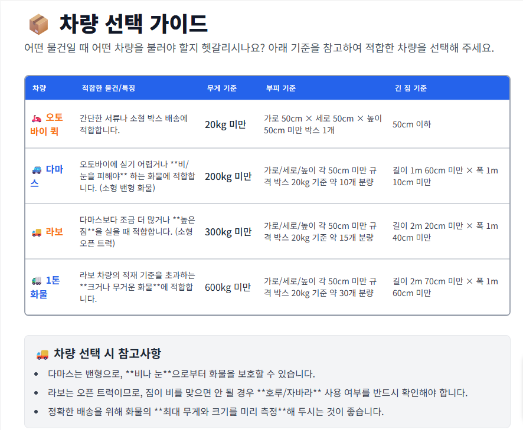
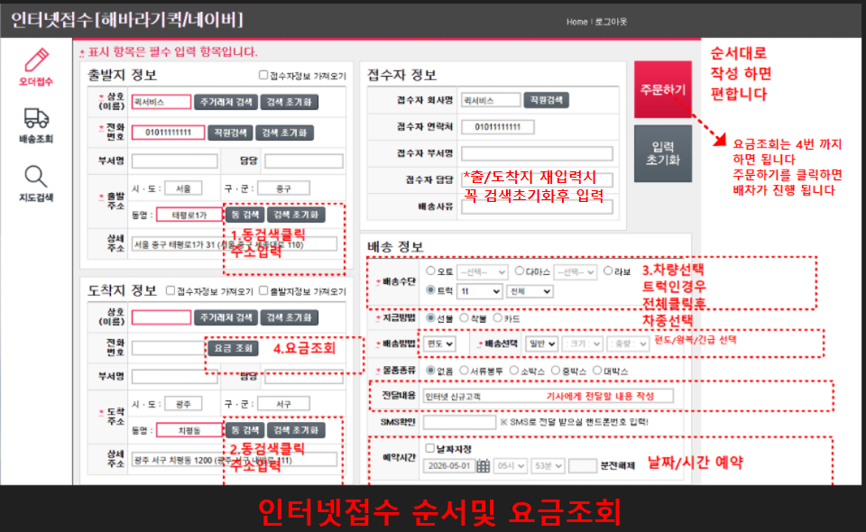
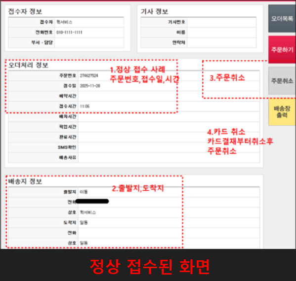
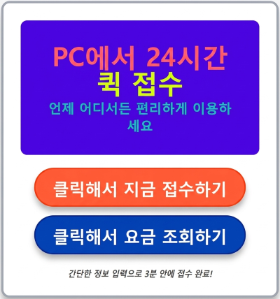
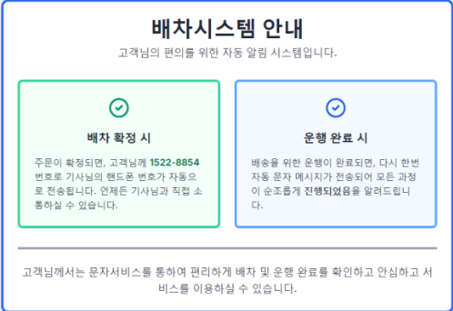
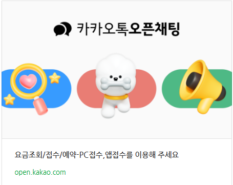

퀵서비스는 디지털 접수 시스템과 AI 스마트 물류 인프라를 도입하며 전통적인 배달 방식을 넘어 첨단 물류 산업으로 현대화되고 있습니다.
나아가 글로벌화되는 전자상거래 환경 속에서 신속하고 체계적인 배송 경쟁력을 확보해 나가고 있습니다.
서울 및 수도권의 복잡한 대도시 권역부터 광역시, 그리고 지방 거점에 이르기까지 전국을 유기적으로 잇는 거대한 배송 네트워크를 구축하고 있습니다.
현장에서는 기동력이 뛰어난 오토바이와 소형 밴형 화물인 다마스, 오픈 트럭인 라보, 그리고 대규모 화물을 소화하는 1톤 트럭 기사들이 오늘도 전국 방방곡곡을 누비며 운행을 이어갑니다.
이러한 전천후 차량들과 24시간 PC 접수 시스템이 결합하여, 지역과 거리에 구애받지 않는 가장 안전하고 정확한 맞춤형 운송 솔루션을 완성합니다.